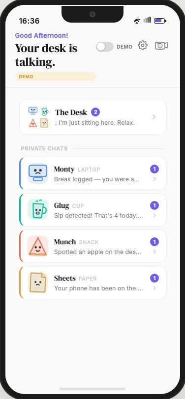
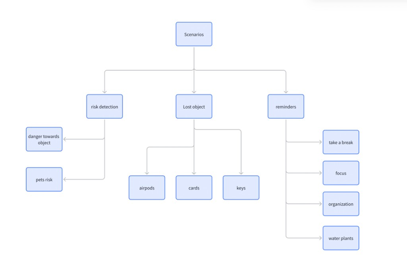
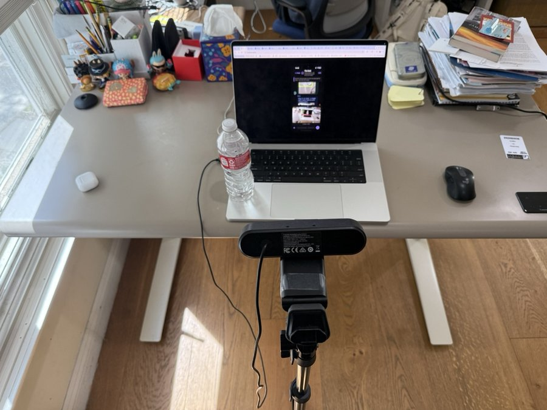
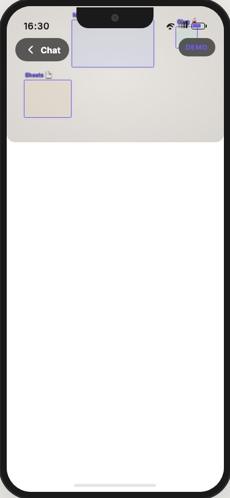
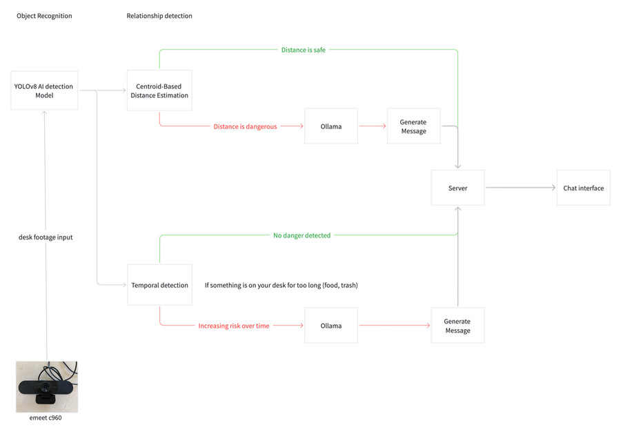
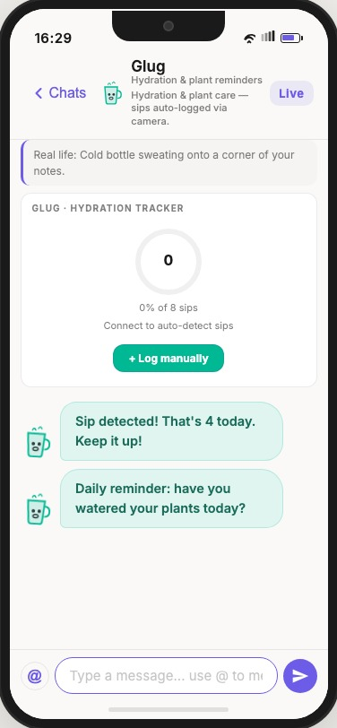
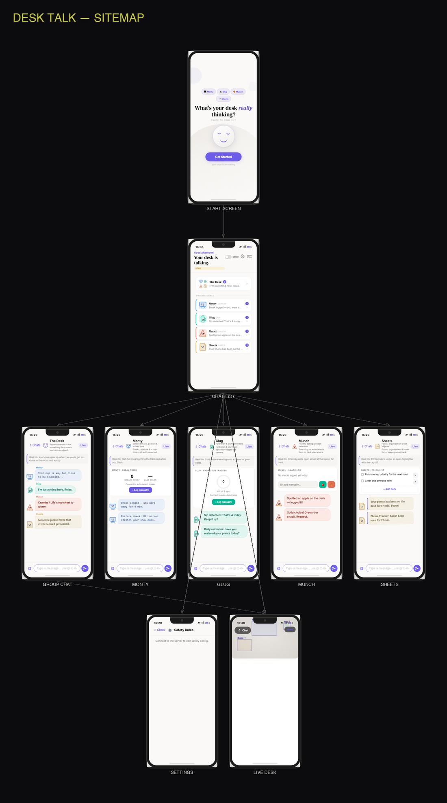

Desk Talk
A camera watches your desk. Objects talk to you about risks, lost items, and daily habits — so the nudge lands before the damage does.
YOLOv8 tracks everything on the desk. The system detects danger, finds lost objects, and builds healthy habits — all delivered as in-character dialogue through a group chat. Flask + Ollama make it real-time.
One camera. One desk.
Risk detection, lost objects, and daily habits.
The problem
Your desk is a blindspot. A cup drifts toward the laptop. Your phone sits face-up during deep work. Keys vanish under a pile of papers. You sit for three hours without moving. None of it registers until something spills, breaks, or disappears.
Reminder apps get snoozed. Alarms feel clinical. This project reframes the desk as a living ecosystem — a camera sees what you miss, and the objects themselves speak up through a group chat. The tone is personality-driven humor, not surveillance.

Scenarios
The system doesn’t do one thing — it handles three distinct scenario categories, each with multiple sub-features running simultaneously through the same camera feed.

Risk Detection
Camera watches spatial relationships between objects and flags danger before anything spills, falls, or breaks.
- Object DangerCup near laptop, snack on papers — proximity and zone intrusion triggers dialogue
- Pet RiskCat or dog detected near the desk — warns about knocked drinks, chewed cables, scattered papers
- Edge ProximityObjects drifting toward the edge of the desk surface — fall risk before it happens
Lost Object Tracking
Tracks when small items were last seen on the desk. If something disappears for too long, the group chat alerts you.
- PhoneAlerts when your phone hasn’t been seen for 10+ minutes
- KeysTracks when keys were last on the desk — “last seen 15 min ago”
- Wallet / CardsLogs wallet or card-like objects — notifies if they vanish
Reminders
Habit coaching built into the detection loop — some triggered by vision, some by timers, all delivered in character.
- Take a BreakAuto-detects when you leave for 5+ min — logs it, welcomes you back
- HydrationAuto-logs sips when the cup leaves the desk and returns
- Healthy EatingAuto-detects food via YOLO and rates your choices (apple vs pizza)
- Focus ModePhone on desk for 5+ min during work? Sheets nudges you to put it away
- Desk OrganizationToo many objects detected? A gentle nudge to tidy up
- Posture CheckPeriodic reminders to sit up straight, stretch, and roll your shoulders
- Screen TimeTracks continuous desk presence — warns at 45+ min without a break
- Water PlantsDaily time-based reminder — have you watered your plants today?
Approach
Observe. One webcam; YOLOv8 keeps bounding boxes on objects, people, and pets in every frame.
Detect. Edge proximity, danger zones, chain analysis, temporal drift, person presence, and object disappearance — not a single distance threshold but layered scenario passes.
Converse. When something triggers, a local LLM (Ollama) writes the line; objects stay in voice and context-aware.
Nudge. The tone is personality and humor, not alarms — enough to glance down and fix the layout, drink water, or find your keys.
“I feel a little tense… that cup is getting closer.” — Monty
Hardware
One eMeet C960 on a small tripod, dead center in front of the desk, tilted down so the frame covers keyboard, papers, and the usual debris. 1080p, roughly a 90° field of view, USB into OpenCV — no exotic drivers. The photo below is the actual setup.

Camera Model
1080p Full HD webcam with built-in dual microphones, wide-angle glass lens, and automatic low-light correction. Plug-and-play USB — no drivers needed. Compatible with OpenCV's VideoCapture interface out of the box.
Placement
Mounted on a tripod stand directly in front of the desk, angled slightly downward. The 90° wide-angle lens covers the full desk surface from edge to edge — a single camera captures all objects and their spatial relationships.

System
Every frame runs through YOLOv8 for object, person, and pet detection. Then the scenario engine fires: risk passes check proximity and zones, the lost-object tracker logs disappearances, and the reminder engine monitors presence, screen time, and habits. When everything’s fine, the server updates state quietly. When something triggers, Ollama drafts an in-character line and the chat moves.

How detection works across scenarios
After YOLOv8 labels each object, person, and pet, the backend runs multiple detection passes in parallel. Each scenario category uses different logic:
- Danger zones — Each object class carries an expanded margin in pixels. If another object enters that padded region, it counts as a spatial conflict. Configurable in Safety Rules.
- Centroid distance — Pairs of objects are compared by center-to-center distance against safe thresholds so “too close” doesn’t depend only on overlapping boxes.
- Chain / sandwich — Checks whether a third object sits between two others (e.g., something between a drink and the keyboard), predicting knock-over paths.
- Temporal drift — Short-term history catches risks that build slowly: objects creeping closer frame by frame.
- Person presence — Tracks when a person is at the desk. Absence of 5+ minutes logs a break; continuous presence of 45+ minutes triggers a screen-time warning.
- Object disappearance — Small items (phone, keys, wallet) are tracked. When they vanish from the frame for 10+ minutes, a lost-object alert fires in group chat.
- Pet detection — Cats and dogs near the desk trigger immediate pet-risk warnings — knocked cups, chewed cables, scattered papers.
- Distraction tracking — Phone presence on the desk during a work session is monitored. 5+ minutes triggers a focus nudge from Sheets.
When all passes say “safe,” the server updates state quietly. When any pass triggers, Ollama drafts an in-character line for the appropriate chat.
Cast
Four objects on the desk — each with a personality, unique detection behaviors, and a role across the three scenarios.
Monty — laptop / keyboard. Anxious center of the desk. Handles break detection, posture reminders, and screen time tracking. Panics when cups get too close.
Glug — cup / bottle. Oblivious hydration coach. Auto-logs sips when picked up and put down. Also delivers plant-watering reminders. Doesn’t understand why everyone panics around it.
Munch — snack / food. Hedonist. Auto-detects food items via camera and rates healthy vs junk. Unapologetic about crumbs near the keyboard.
Sheets — paper / homework. Gentle and anxious. Manages to-do lists, focus mode (phone distraction alerts), desk organization nudges, and lost object tracking.

How they relate
Sample pairs the risk detection scenario watches — danger is staged for dialogue, not a siren. The same spatial data feeds into lost-object and reminder scenarios too.
Liquid spill — existential threat to keyboard and screen
Crumb contamination on keyboard
Water damage to documents
Oil and grease stains on homework
Gallery
Screenshots from the actual app — arrows to step through, or let it advance on its own.
